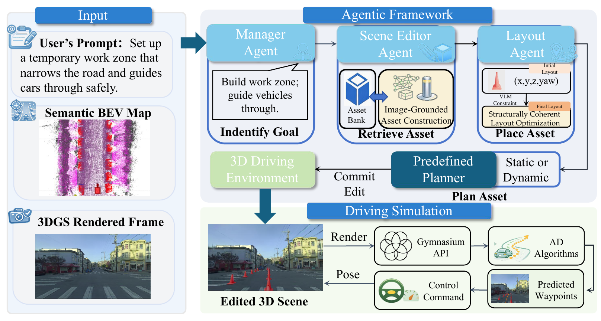

Agentic scene construction framework.
LATTE uses a Manager Agent, Scene Editor Agent, and Layout Agent to translate language requests into executable 3D scene edit programs, then commits the edited scene to a closed-loop simulation environment.